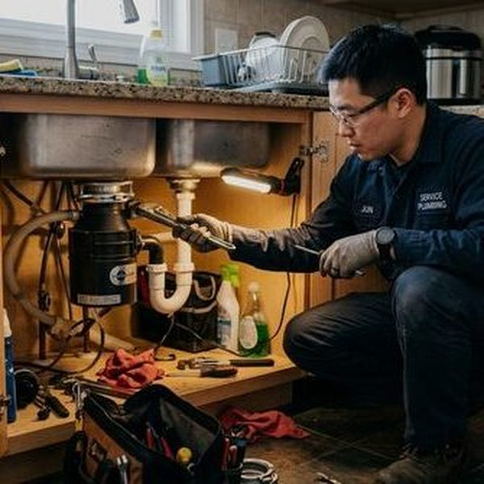
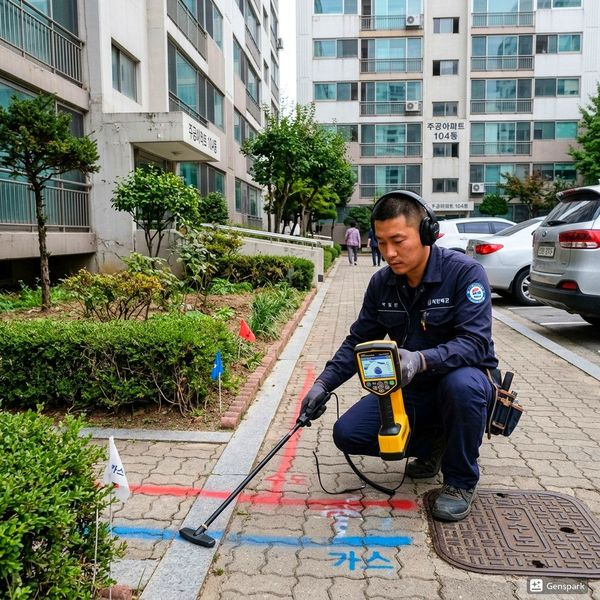
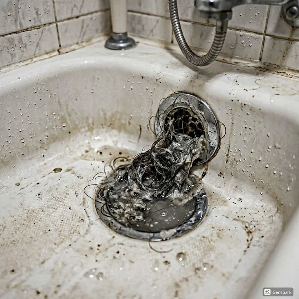

변기에서 물이 새는 5가지 원인
변기에서 물이 쉬지 않고 흐르는 현상은 크게 다섯 가지 원인이 있습니다. 첫째, 플로트 밸브(부구) 고장으로 수위 조절이 안 되어 물이 넘치는 경우입니다. 둘째, 플래퍼(배수 고무 마개)의 경화나 변형으로 물탱크에서 변기로 물이 계속 흘러가는 경우입니다. 셋째, 오버플로우 파이프의 높이 설정 오류입니다. 넷째, 급수 밸브의 고장으로 물이 계속 차오르는 경우입니다. 다섯째, 물탱크와 변기 본체 사이의 연결 패킹 노후입니다. 물이 새면 수도요금이 월 2~5만원 이상 추가될 수 있으므로 조기 수리가 중요합니다.

자가수리 방법과 전문가가 필요한 경우
플래퍼 교체는 가장 간단한 자가수리입니다. 물탱크 뚜껑을 열고 급수 밸브를 잠근 뒤, 오래된 플래퍼를 빼고 새 것으로 교체하면 됩니다. 부품 가격은 5천원~1만원 수준입니다. 플로트 밸브 조정도 비교적 쉽습니다. 그러나 급수 밸브 자체 교체, 물탱크-본체 패킹 교체, 배관 연결부 누수는 전문 도구와 기술이 필요합니다. 잘못 건드리면 물이 분출하거나 변기가 파손될 수 있습니다. 제우스시설관리는 변기 수리 전문 기사가 28분 내 출동하며, 부속 교체부터 변기 전체 교체까지 원스톱으로 처리합니다. 전화 상담으로 자가수리 가능 여부도 안내해 드립니다.

자주 묻는 질문
Q. 변기 물이 새는데 수도요금이 얼마나 나올까요?
A. 누수 정도에 따라 다르지만, 변기 누수는 하루 300~1000리터 낭비로 월 2만~8만원의 수도요금이 추가됩니다.
Q. 양변기 전체 교체 비용은?
A. 변기 제품 가격(15만~50만원) + 공임비(8만~15만원)이며, 기존 배관 상태에 따라 추가 비용이 발생할 수 있습니다.